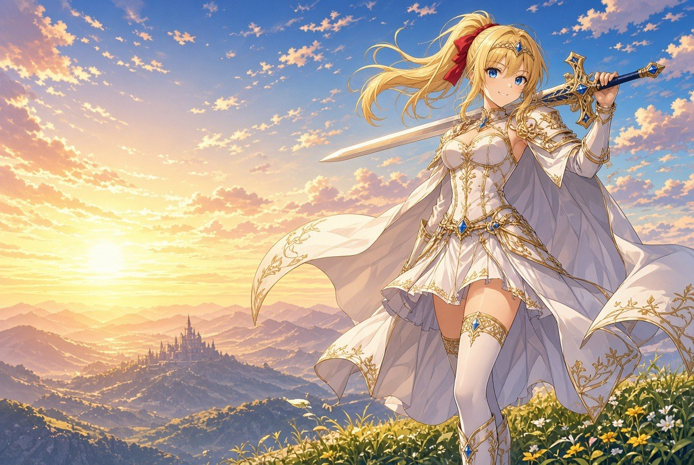

小公主的騎士修行
王宮最受寵愛的小公主，偷偷立志要成為騎士，帶著劍溜出了城堡。
放心不下的王宮派出了擅長操控人偶的魔法大臣，把一隻魔法熊貓娃娃交給公主—— 熊貓會依她當下的實力，安排剛剛好的試煉；萬一撐不住了，就用熊貓車把公主平安送回王宮。
（所以你會發現：連續倒下時試煉會變溫和，一路過關則會逐漸嚴苛。那都是熊貓在調整。）
手機：左下移動，右下 斬 / 跳 / 必殺
電腦：←→ 或 A D 移動・空白鍵 跳・J 攻擊・K 必殺・P 暫停
連續按「斬」可打出三段連擊，氣力集滿放必殺旋風斬。
走到終點傳送門過關，每 3 關會有魔王。第 9 關的魔王打完就是全破， 會播結局並解鎖下一位角色。
最高分：0